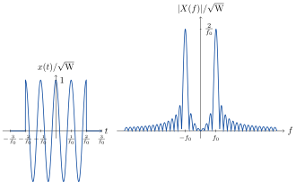

E Mathematical Basics
E.1 Fourier Transform
Table E.1 summarises the most important Fourier transforms used in communications engineering (see also Appendix E.2 for the definition of the Dirac delta function and Appendix D.1 for the definition of the rectangular function \(\mathrm{rect}(t)\)).
| Signal \(x(t)\) | Spectrum \(X(f)\) |
|---|---|
| \(\delta(t)\) | \(1\) |
| \(\sin(2\pi f_0 t)\) | \(\frac{j}{2}\delta(f+f_0) - \frac{j}{2}\delta(f-f_0)\) |
| \(\cos(2\pi f_0 t)\) | \(\frac{1}{2}\delta(f+f_0) + \frac{1}{2}\delta(f-f_0)\) |
| \(\mathrm{rect}(t)\) | \(\frac{\sin(\pi f)}{\pi f}=:\mathrm{sinc}(f)\) |
Theorem E.1 summarises the most important properties of the Fourier transform. For a proof of these properties, we refer to, e.g., Papula (2014) or Bronstein et al. (1997).
Theorem E.1 (Properties of the Fourier Transform) With \(\alpha,\alpha_1,\alpha_2\in\mathbb{R}\), \(x(t) \leftrightarrow X(f)\), and \(x_{1/2}(t) \leftrightarrow X_{1/2}(f)\):
- Linearity: \(\alpha_1 x_1(t) + \alpha_2 x_2(t) \leftrightarrow \alpha_1 X_1(f) + \alpha_2 X_2(f)\)
- Duality: \(X(t) \leftrightarrow x(-f)\)
- Scaling: \(x(\alpha t) \leftrightarrow \frac{1}{|\alpha|} X\left( \frac{f}{\alpha} \right)\)
- Time Translation: \(x(t-t_0) \leftrightarrow X(f)e^{-j2\pi f t_0}\)
- Frequency Translation: \(x(t)e^{j2\pi f_0 t} \leftrightarrow X(f-f_0)\)
- Symmetry: \(x(t)\in\mathbb{R} \leftrightarrow X(f)\) where
- \(|X(-f)|=|X(f)|\) and \(\angle X(-f) = - \angle X(f)\)
- \(\mathrm{Re}\{X(-f)\} = \mathrm{Re}\{X(f)\}\) and \(\mathrm{Im}\{X(-f)\}=-\mathrm{Im}\{X(f)\}\)
- Multiplication: \(x_1(t)\cdot x_2(t) \leftrightarrow X_1(f) * X_2(f)\)
- Convolution: \(x_1(t)*x_2(t) \leftrightarrow X_1(f)\cdot X_2(f)\) (see also Appendix E.3)
- Conjugation: \(x^*(t) \leftrightarrow X^*(-f)\)
Exercise E.1 (Fourier Transform) Compute the Fourier transform \(X(f)\) of the following signals and draw the signals as well as the absolute value of their spectra, i.e., \(|X(f)|\), in a diagram by using a Computer Algebra System (CAS) of your choice. If you don’t have a CAS at your hand, a qualitative plot is sufficient.
- \(x(t) = 1\sqrt{\mathrm{W}}\cdot\mathrm{sinc}(t f_\mathrm{s})\)
- \(x(t) = 1\sqrt{\mathrm{W}}\cdot\cos(2\pi f_0 t)\cdot\mathrm{rect}(tf_0/4)\)
- \(x(t) = 1\sqrt{\mathrm{W}}\cdot\mathrm{rect}(t/T_\mathrm{s}-1/2)\)
It holds (see Table E.1): \[\mathrm{rect}(t) \leftrightarrow \mathrm{sinc}(f)\] and due to the duality property of the Fourier transform (see Theorem E.1) and the symmetry of the rectangular function \[\mathrm{sinc}(t) \leftrightarrow \mathrm{rect}(-f)=\mathrm{rect}(f).\] Finally, we get with the scaling property in Theorem E.1 and \(T_\mathrm{s}=1/f_\mathrm{s}\) \[x(t)=1\sqrt{\mathrm{W}}\cdot\mathrm{sinc}(t f_\mathrm{s}) \leftrightarrow X(f)=T_\mathrm{s} \sqrt{\mathrm{W}}\cdot\mathrm{rect}(f/f_\mathrm{s}).\] Figure E.1 shows the signal \(x(t)\) and the absolute value \(|X(f)|\) of its spectrum, respectively.
Figure E.1: Signal \(x(t)\) and spectrum \(X(f)=|X(f)|\)
It holds (see Table E.1): \[\cos(2\pi f_0 t) \leftrightarrow \frac{1}{2}\delta(f+f_0) + \frac{1}{2}\delta(f-f_0)\] and due to the scaling property of the Fourier transform (see Theorem E.1) \[\mathrm{rect}\left(t\frac{f_0}{4}\right) \leftrightarrow \frac{4}{|f_0|}\mathrm{sinc}\left(\frac{4f}{f_0}\right).\] Multiplying two functions in the time domain yields convolution in the frequency domain (see again Theorem E.1), i.e., \[\cos(2\pi f_0 t)\cdot\mathrm{rect}\left(t\frac{f_0}{4}\right)\] \[\updownarrow\] \[\left(\frac{1}{2}\delta(f+f_0) + \frac{1}{2}\delta(f-f_0)\right)*\frac{4}{|f_0|}\mathrm{sinc}\left(\frac{4f}{f_0}\right).\] Finally, we get with \(f_0>0\) \[x(t) \leftrightarrow \frac{2\sqrt{\mathrm{W}}}{f_0}\left(\mathrm{sinc}\left(\frac{4(f+f_0)}{f_0}\right)+\mathrm{sinc}\left(\frac{4(f-f_0)}{f_0}\right)\right).\] Figure E.2 shows the signal \(x(t)\) and the absolute value \(|X(f)|\) of its spectrum, respectively.
Figure E.2: Signal \(x(t)\) and the absolute value \(|X(f)|\) of its spectrum
It holds (see Table E.1): \[\mathrm{rect}(t) \leftrightarrow \mathrm{sinc}(f)\] and due to the scaling property of the Fourier transform and the fact that \(T_\mathrm{s}>0\) (see Theorem E.1) \[\mathrm{rect}\left(\frac{t}{T_\mathrm{s}}\right) \leftrightarrow T_\mathrm{s}\mathrm{sinc}(T_\mathrm{s}f).\] Finally, with the time translation property of the Fourier transform (see again Theorem E.1), we get \[x(t)= 1\sqrt{\mathrm{W}}\cdot\mathrm{rect}\left(\frac{t-\frac{T_\mathrm{s}}{2}}{T_\mathrm{s}}\right)=1\sqrt{\mathrm{W}}\cdot\mathrm{rect}\left(\frac{t}{T_\mathrm{s}}-\frac{1}{2}\right)\] \[\updownarrow\] \[X(f)=T_\mathrm{s}\sqrt{\mathrm{W}}\cdot\mathrm{sinc}(fT_\mathrm{s})e^{-j \pi f T_\mathrm{s}}.\] Figure E.3 shows the signal \(x(t)\) and the absolute value \(|X(f)|\) of its spectrum, respectively.
Figure E.3: Signal \(x(t)\) and the absolute value \(|X(f)|\) of its spectrum
E.2 Dirac Delta Function
E.2.1 Definition and Properties
Note that due to the scaling property of the Dirac delta function, i.e., \(\delta(\alpha x)=\delta(x)/|\alpha|\) (see, e.g., Papula (2014) or Wikipedia (2020) and references therein), the unit of the Dirac delta function is the reciprocal value of the unit of its argument. This leads to the fact that the unit of the Dirac delta function in the time domain is \([\delta(t)]=1\,\mathrm{s}^{-1}\) and in the frequency domain \([\delta(f)]=1\,\mathrm{Hz}^{-1}\) (see also Appendix C).
Figures E.4 and E.5 illustrate the series of rectangular functions in the time and frequency domain for decreasing \(\varepsilon_t\) and \(\varepsilon_f\), respectively. Thus, the Dirac delta function describes a very short impulse with infinite amplitude at \(t=0\) but where the area below the impulse is limited to one (see Theorem E.2).
Figure E.4: Series of rectangular functions in the time domain resulting in the Dirac delta function \(\delta(t)\)
Figure E.5: Series of rectangular functions in the frequency domain resulting in the Dirac delta function \(\delta(f)\)
Note that in Figures E.4 and E.5, the ordinates of the Dirac delta function \(\delta(t)\) and \(\delta(f)\) have no unit although the units \([\delta(t)]=1\,\mathrm{s}^{-1}\) and \([\delta(f)]=1\,\mathrm{Hz}^{-1}\), respectively. This is no typo and arises from the fact that the Dirac delta function is drawn as a vector whose length corresponds to the area underneath it and the unit of the area is \([\delta(t)dt]=[\delta(f)df]=1\) in the given case. This special notation makes it difficult to draw finite signals in the same diagram as signals with Diracs, e.g., a sampled signal as defined in Subsection 2.1. Although they have the same unit, the representation is different because on the one hand, the signal itself, and on the other, an area below the signal is plotted.
Theorem E.2 summarises the most important properties of the Dirac delta function required for understanding of some derivations in this textbook. For derivations of these properties see, e.g., Papula (2014) or Wikipedia (2020).
Theorem E.2 (Most Important Properties of the Dirac Delta Function) The Dirac delta function \(\delta(t)\) has the following properties:
- Area: \(\int\limits_{-\infty}^\infty \delta(t) dt = 1\),
- Multiplication: \(x(t)\delta(t-t_0)=x(t_0)\delta(t-t_0)\),
- Convolution: \(x(t)*\delta(t-t_0)=x(t-t_0)\) (“\(*\)” denotes convolution, see Appendix E.3), and
- Fourier transform: \(\delta(t)\leftrightarrow 1\).
E.2.2 Dirac Comb
Figure E.6 shows a Dirac comb signal together with its spectrum.
Figure E.6: Dirac comb in the time and frequency domain
E.3 Convolution
The major application of convolution lies in system theory. There, convolution is used to compute the output of a Linear Time-Invariant (LTI) system in terms of its input. To do so, the impulse response \(h(t)\), i.e., the output of the system in case of the Dirac delta function \(\delta(t)\) being its input, is used. It holds \[\begin{equation*} y(t) = h(t) * x(t) \leftrightarrow Y(f) = H(f)\cdot X(f), \end{equation*}\] where \(H(f)\) is the frequency response of the system, i.e., \(h(t)\leftrightarrow H(f)\). Note that the unit of the impulse response is \([h(t)]=1\,\mathrm{s}^{-1}\) (see also Appendix C). Thus, if \([x(t)]=1\sqrt{\mathrm{W}}\), the unit of the system output is \([y(t)]=[x(t)]\cdot[h(t)]\cdot 1\,\mathrm{s}=1\sqrt{\mathrm{W}}\) as well.
Figure E.7: Animated example of the convolution of a signal \(x(t)\) with the impulse response \(h(t)\)
The properties of convolution are summarised in Theorem E.4 (Papula 2014).
Theorem E.4 (Properties of Convolution) With \(x_1(t)\), \(x_2(t)\), and \(x_3(t)\) being complex functions and \(\alpha\in\mathbb{C}\):
Commutativity: \(x_1(t) * x_2(t) = x_2(t) * x_1(t)\)
Associativity: \(x_1(t) * (x_2(t) * x_3(t)) = (x_1(t) * x_2(t)) * x_3(t)\)
Distributivity: \(x_1(t) * (x_2(t) + x_3(t)) = x_1(t) * x_2(t) + x_1(t) * x_3(t)\)
Scalar Multiplication: \(\alpha (x_1(t) * x_2(t)) = (\alpha x_1(t)) * x_2(t) = x_1(t) * (\alpha x_2(t))\)
Unit Element: \(x_1(t) * \delta(t) = x_1(t)\)
Complex Conjugate: \((x_1(t) * x_2(t))^*=x_1^*(t) * x_2^*(t)\)
Fourier Transform: (with \(x_1(t) \leftrightarrow X_1(f)\) and \(x_2(t) \leftrightarrow X_2(f)\))
- \(x_1(t) * x_2(t) \leftrightarrow X_1(f)\cdot X_2(f)\)
- \(x_1(t) \cdot x_2(t) \leftrightarrow X_1(f) * X_2(f)\)
E.4 Probability Theory
E.4.1 Random Experiment
We consider a random experiment (German: Zufallsexperiment) with outcomes (German: Ereignisse) \(\omega\in\Omega\) occuring with a certain probability \(P(\omega)\). Here, \(\Omega\) denotes the set of possible outcomes (German: Ereignismenge) and \(P\) a probability measure (German: Wahrscheinlichkeitsmaß).
E.4.2 Random Variable
Definition E.4 (Random Variable) A random variable \(X\) (German: Zufallsvariable) is a measurable function from a set of possible outcomes \(\Omega\) to a measurable space \({\cal X}\), e.g., the set \(\mathbb{R}\) of real-valued numbers, i.e.,57 \[X:\ \Omega\to {\cal X},\ \omega\mapsto X(\omega).\] The outcome \(x\) of the random variable \(X\) is denoted as a sample (German: Stichprobe or Realisierung).58
A random variable is discrete if \({\cal X}\) is finite or countably infinite59 and continuous if \({\cal X}\) is uncountably infinite60.Example E.3 (Rolling a Fair Six-Sided Die) Let us consider the rolling of a fair six-sided die. In this case, the set of possible outcomes reads as \[\begin{aligned}\Omega=\{&\text{“1 Auge"},\text{“2 Augen"},\text{“3 Augen"},\text{“4 Augen"},\\ &\text{“5 Augen"},\text{“6 Augen"}\}, \end{aligned}\] and the most obvious choice of the random variable \(X\) is to use the number of pips (German: Augenzahl) as depicted in Table E.2. The random variable \(X\) is discrete in this case.
| \(\omega\) | “1 A.” | “2 A.” | “3 A.” | “4 A.” | “5 A.” | “6 A.” |
| \(X(\omega)\) | 1 | 2 | 3 | 4 | 5 | 6 |
If not stated otherwise, we assume in the following that the random variable \(X\) is real-valued, i.e., \({\cal X}=\mathbb{R}\).
E.4.3 Cumulative Distribution Function
Figure E.8: CDF of a fair six-sided die
If we are interested in the probability that samples of \(X\) lie between two values, e.g., \(x_1=1.5\) and \(x_2=3.5\), we use the CDF in the following way \[\begin{aligned}P(1.5< X \leq 3.5)&=F_X(3.5)-F_X(1.5)\\ &=P(X=2)+P(X=3)\\ &=2\frac{1}{6}=\frac{1}{3}. \end{aligned}\]
E.4.4 Probability Density Function
Figure E.9: PDF of a fair six-sided die
The PDF \(f_X(x)\) of a random variable with a Gaussian distribution is depicted in Figure E.10.
Figure E.10: PDF of a random variable with a Gaussian distribution
Figure E.11: PDF of the noisy constant signal value \(X\)
E.4.5 Mean
If we have only access to \(N\) samples \(x_i\), \(i\in\{1,2,\dots,N\}\), of a random variable \(X\), e.g., via Monte Carlo simulations or via performing \(N\) times the random experiment, and do not know the exact PDF, it is not possible to compute the mean \(\mu_X\) analytically. However, an estimation of \(\mu_X\) can be computed as the sample mean or empirical mean \(\hat{\mu}_X\) (German: Stichprobenmittel or empirischer Mittelwert) according to \[\hat{\mu}_X=\frac{1}{N}\sum_{i=1}^N x_i\overset{N\to\infty}{\to}\mu_X.\]
E.4.6 Variance
Definition E.9 (Variance) The variance \(\sigma_X^2\) (German: Varianz) of a random variable \(X\) equals the squared standard deviation \(\sigma_X\) (German: Standardabweichung) and is defined as61 \[\begin{equation} \sigma_X^2=E\left[|X-\mu_X|^2\right]=\int\limits_{-\infty}^\infty |x-\mu_X|^2 f_X(x) dx. \tag{E.5} \end{equation}\] The variance is a measure for the deviation of the random variable \(X\) from the mean \(\mu_X\).
In case of a discrete random variable \(X:\Omega\to{\cal X}\), Eq. (E.5) simplifies to \[\begin{equation} \sigma_X^2=E\left[|X-\mu_X|^2\right]=\sum_{x\in{\cal X}} |x-\mu_X|^2 P(X=x). \tag{E.6} \end{equation}\]Again, if we have only access to \(N\) samples \(x_i\), \(i\in\{1,2,\dots,N\}\), of a random variable \(X\), e.g., via Monte Carlo simulations or via performing \(N\) times the random experiment, and do not know the exact PDF, it is not possible to compute the variance \(\sigma_X^2\) analytically. However, an estimation of \(\sigma_X^2\) can be computed as the sample variance or empirical variance \(\hat{\sigma}_X^2\) (German: Stichprobenvarianz or empirische Varianz) according to62 \[\hat{\sigma}_X^2=\frac{1}{N-1}\sum_{i=1}^N |x_i-\hat{\mu}_X|^2\overset{N\to\infty}{\to}\sigma_X^2.\]
E.4.7 Random Process
Figure E.12: Ensemble of four realisations of a band-limited noise signal
E.4.8 Ensemble and Time Average
In case that the statistical properties of the random process are not known and that a realisation is not available for all \(t/\mathrm{s}\in\mathbb{R}\), the empirical ensemble average (German: empirischer Scharmittelwert) \[\hat{\mu}_X(t)=\frac{1}{N}\sum_{i=1}^{N} x_i(t),\] can be used to obtain an estimate of \(\mu_X(t)\), and the empirical time average (German: empirischer Zeitmittelwert) \[\hat{\overline{x_i}}=\frac{1}{T}\int\limits_{0}^T x_i(t)dt,\] to obtain an estimate of \(\overline{x_i}\). Here, \(N\) is the number of available realisations \(x_i(t)\), \(i\in\{1,2,\dots,N\}\), whose values are given for the time intervall \(t\in[0,T]\).
Figure E.13: Empirical ensemble and time averages of a band-limited noise signal
E.4.9 Stationarity and Ergodicity
Stationarity is a required key assumption because in most cases, we do not have access to different realisations of a random process. If we record, e.g., the noise signal of a resistor beginning at one time instance, it is not possible to get another realisation beginning from the same time instance without time traveling or the concept of multiple universes. However, if the statistical properties do not depend on the time, we can simply obtain another realisation by recording the noise signal beginning at a different time instance, e.g., once the first recording has been finished. Cleary, this would not be possible, if the statistical properties of the noise signal change over time.
Example E.14 (Stationarity and Ergodicity of Band-Limited Noise Signal) Remember Example E.12 with Figure E.13. It can be seen that the empirical ensemble average \(\hat{\mu}_X(t)\) is approximately independent of \(t\), i.e., \[\hat{\mu}_X(t)\approx \mu_X = 0.5\sqrt{\mathrm{W}}.\] In other words, the band-limited noise signal is stationary if we assume that all other statistical properties do also not change over time.
Besides, the empirical time averages \(\hat{\overline{x_i}}\) of all realisations are approximately identical, i.e., \[\hat{\overline{x_i}}\approx \overline{x} = 0.5\sqrt{\mathrm{W}}.\]
Moreover and most importantly, the empirical ensemble average is approximately equal to the empirical time average, i.e., it seems that the underlying random process is not only stationary but also ergodic.Again, ergodicity is a key requirement if we have only access to one realisation. Therefore, throughout this textbook, we only consider ergodic (and stationary) processes!
E.4.10 Auto-Correlation Function
E.4.11 Power Spectral Density
welch from the library scipy.signal has been used to compute the PSD estimate.
Based on the power spectral density \(\Phi_X(f)\), the power of the corresponding signal \(X(t)\) can be computed as \[P_X=\int\limits_{-\infty}^\infty \Phi_X(f) df.\]
In Appendix E.3, we have seen that the deterministic output \(y(t)\) of a deterministic LTI system can be written as \[y(t) = h(t) * x(t) \leftrightarrow Y(f) = H(f)\cdot X(f),\] where \(x(t)\) is the deterministic input signal. The system is represented via its impulse response \(h(t)\) or frequency response \(H(f)\).
If \(X(t)\) and \(Y(t)\) are random processes, this relationship no longer holds because there exists no Fourier transforms in this case. However, with the PSDs \(\Phi_X(f)\) and \(\Phi_Y(f)\) of the processes \(X(t)\) and \(Y(t)\), respectively, it holds \[\begin{equation} Y(t) = h(t) * X(t) \leftrightarrow \Phi_Y(f) = |H(f)|^2\cdot \Phi_X(f). \tag{E.7} \end{equation}\]
Due to the unitless definition of \(x(t)\), the unit of its Fourier transform is here \([X(f)]=1\,\mathrm{s}\) (see also Appendix C).↩︎
Note that the unit of the Dirac in the time domain is \([\delta(t)]=1\,\mathrm{s}^{-1}\) and in the frequency domain \([\delta(f)]=1\,\mathrm{s}\) (see also Appendix C).↩︎
Usually, the Fourier series expands a periodic function in the time domain. However, it holds as well for periodic functions in the frequency domain. In this case, the period is a frequency difference, here, the distance of two Dirac peaks.↩︎
The complex conjugate operator “\((\cdot)^*\)” is necessary in case of complex-valued functions \(x_1\) and \(x_2\).↩︎
If two spectra \(X_1(f)\) and \(X_2(f)\) are convolved, the resulting unit is \([X_1(f)*X_2(f)]=[X_1(f)]\cdot[X_2(f)]\cdot 1\,\mathrm{Hz}\). The operator \((\cdot)^*\) denotes conjugate complex.↩︎
Note that in this section, a capital letter refers to a random variable and no longer to the spectrum of the corresponding small letter.↩︎
Whereas the random variable is denoted by a capital letter, its samples are denoted by the corresponding small letter.↩︎
Examples: \({\cal X}=\{0,1\}\), \({\cal X}=\{1,2,\dots,6\}\) or \({\cal X}=\mathbb{Z}\)↩︎
Example: \({\cal X}=\mathbb{R}\)↩︎
With the operation “\(|\cdot|\),” this definition of the variance holds also for complex-valued random variables.↩︎
The factor \(\frac{1}{N-1}\) is important to obtain an unbiased estimate of the variance, i.e., \(E[\hat{\sigma}_X^2]=\sigma_X^2\), in cases where the exact mean \(\mu_X\) is not known and only the sample mean \(\hat{\mu}_X=\frac{1}{N}\sum_{i=1}^N x_i\) is available. Using the factor \(\frac{1}{N}\) instead yields \(E\left[\frac{1}{N}\sum_{i=1}^N\left|x_i-\frac{1}{N}\sum_{i=1}^N x_i \right|^2\right]=\frac{N-1}{N}\sigma_X^2\), which is a biased estimate in this case. Note that if the estimate \(\hat{\mu}_X\) is replaced by the exact mean \(\mu_X\), the resulting estimator is unbiased as well. This is only possible if the exact mean is known like, e.g., in case of a zero-mean process. Besides, in general, the esimator with the factor \(\frac{1}{N}\) is a maximum likelihood estimator and has a smaller mean squared error compared to the esimator with the factor \(\frac{1}{N-1}\).↩︎
Note that \(X(t)\) denotes the time-dependent random variable and \(X(\omega,t)\) the specific value for the outcome \(\omega\).↩︎
Note that ergodicity implies stationarity.↩︎
Here, \(X(t)\) can be even complex-valued.↩︎